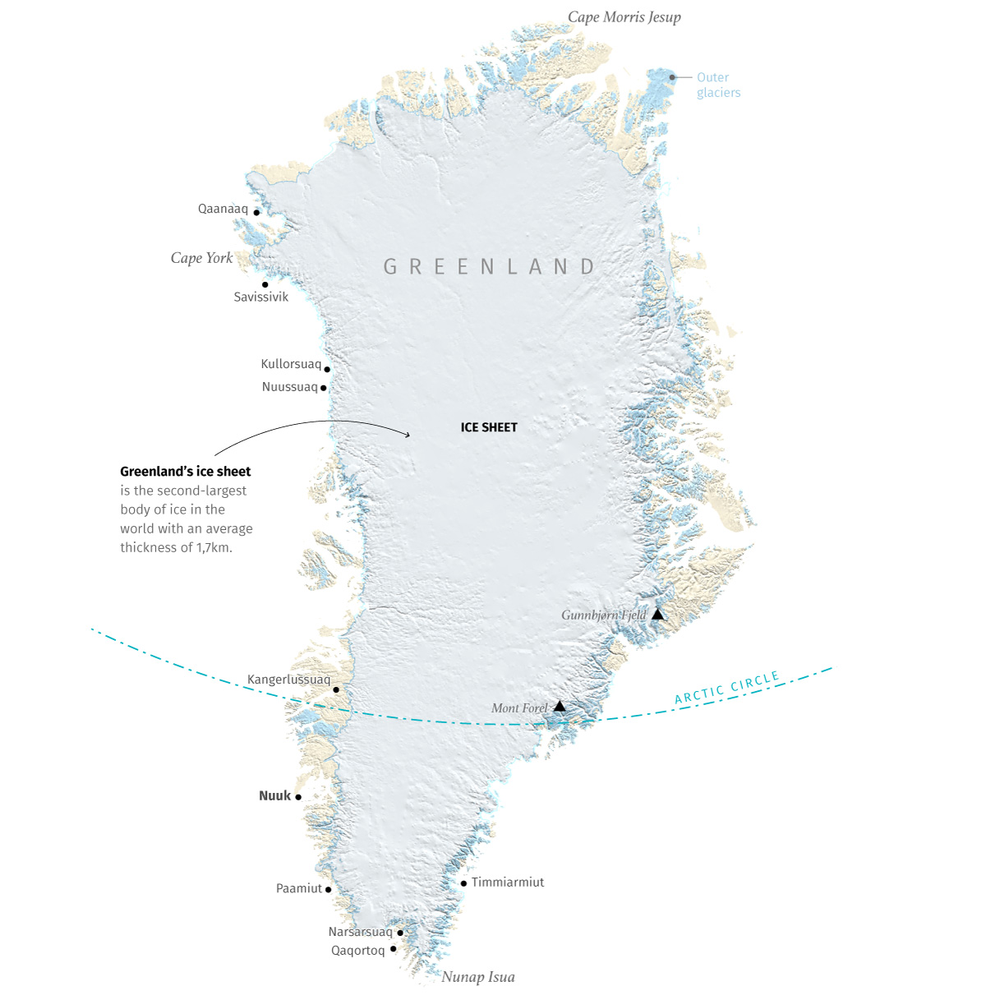
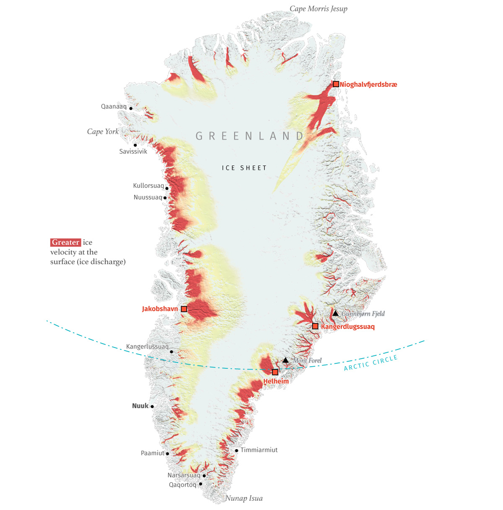
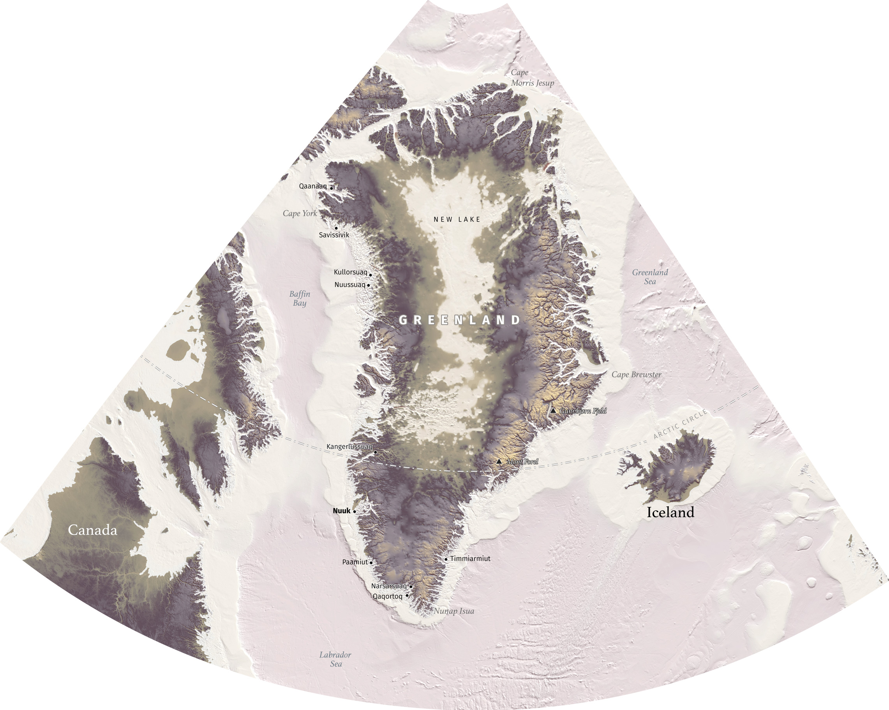
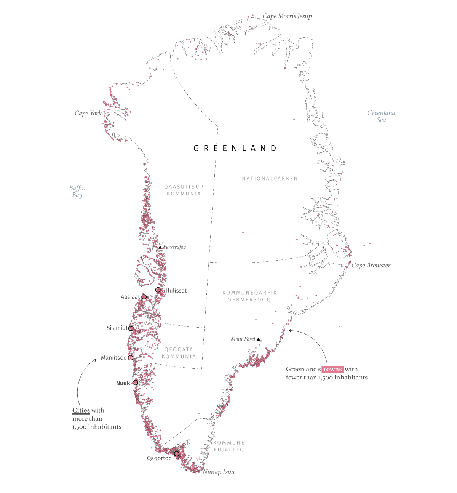
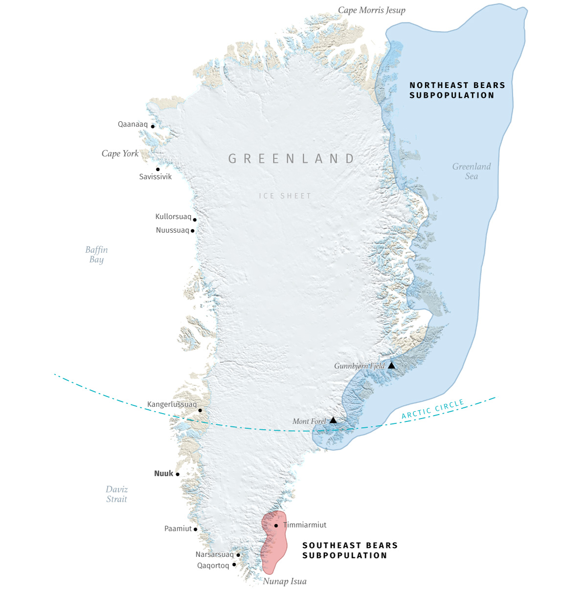
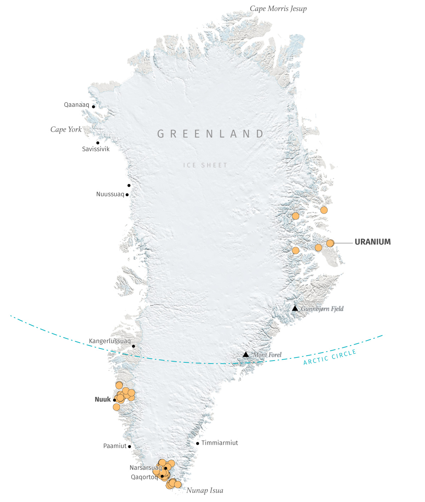
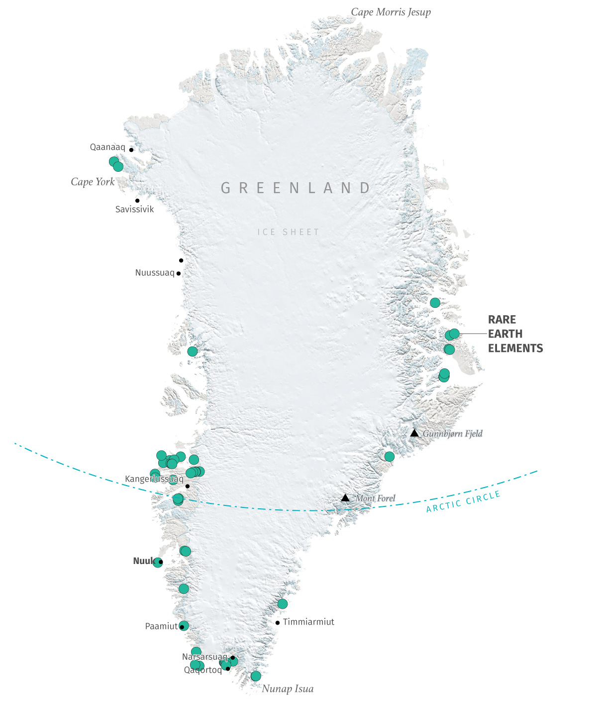
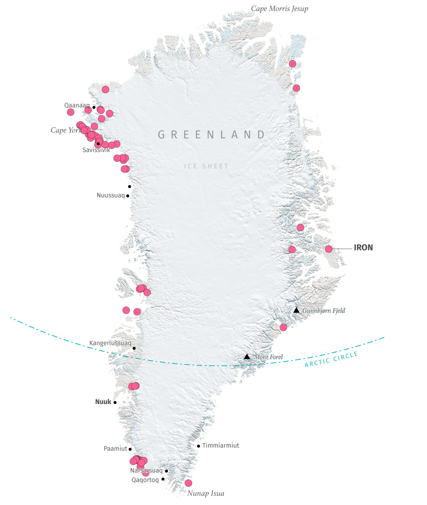
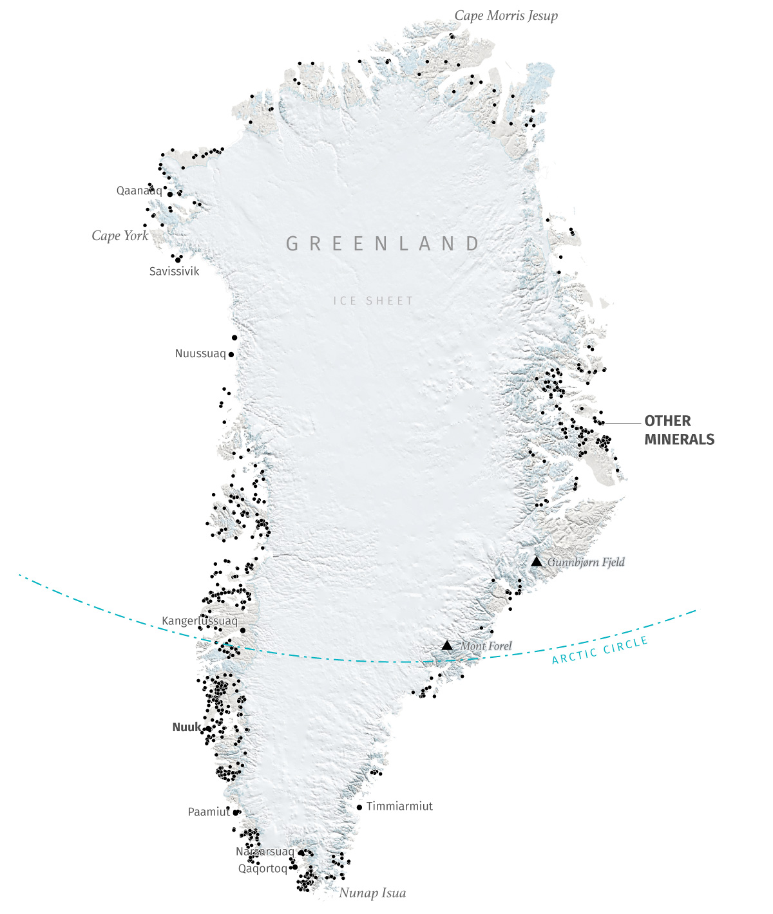

Jan. 2026
Ten Maps of Greenland
Greenland has been in the headlines everywhere due to the political tensions. But beyond the controversy, this island, roughly the size of Mexico, has many unique features. Here are ten maps highlighting some of the many curiosities of this European territory perched atop the American continent.
Greenland is home to the U.S. Pituffik Space Base, known formerly as Thule Air Base is the primary active U.S. military installation in Greenland, located in the northwest for missile warning and space surveillance. Following WWII and Cold War expansion, the U.S. abandoned dozens of sites, including the Camp Century ice-covered nuclear site. Denmark also currently have bases in Greenland, the Joint Arctic Command operates in Greenland's capital, Nuuk, focusing on surveillance and search-and-rescue.
Here is a map showing the current bases and some others that the USA maintained in the past.
Most of Greenland is covered by a massive ice sheet in the middle of the island. That ice blanket is about 3,5km thick at its maximum, and by area of extent is the second largest body of ice in the world, only behind Antarctica. Greenland’s ice sheet alone is larger than the combined areas of France, Germany, and Spain. Here’s a map of Greenland’s ice sheet and glaciers based on data from Enveo Cryoportal.

The ice in Greenland is melting at an incredible rate, twice as fast as in Antarctica. NASA has been monitoring the change in Greenland's ice mass since 2002, and the trend shows a decrease of 266 billion metric tons of ice per year, enough to fill 100 million Olympic-sized swimming pools. Greenland’s outer glaciers are experiencing rapid acceleration, thinning, and increased calving, significantly contributing to sea-level rise. Researchers estimate a rise in sea level of about 7m if the ice sheet melts. Key, fast-moving glaciers include Jakobshavn Isbræ, Kangerdlugssuaq and Helheim, and Nioghalvfjerdsbræ the 79°N Glacier, which collectively drain a large percentage of the ice sheet.
Below you can see a map showing the magnitude of ice velocity in Greenland derived by the European Space Agency using SAR data from Sentinel-1 acquired between 2019 and 2020.

That, of course, makes me wonder what Greenland would look like without that enormous ice sheet. GEBCO offers global bathymetry data, and when I downloaded the sub-ice data for the area of Greenland I found that most of the interior of the island is under the sea level. Without the ice connecting the land, Greenland would look like a cluster of large islands rather than a single landmass, with jagged coastlines and deep fjords. Below you can see a map of Greenland with no ice.

Having the middle of the territory completely covered by a shell of ice has, of course, determined where its inhabitants have settled. Greenland’s population is about 57,000(as of 2026), most of the people lives in coastal, ice-free areas. The capital, Nuuk, is home to nearly 20,000 of Greenlanders, but the island is full of tiny settlements of just a few residents as you can see in the map below. (data from OSM)

And talking about Greenland’s residents, polar bears are an icon for greenlanders. Greenland's coat of arms features a polar bear. For Greenlanders, the polar bear —or nanoq— more than an animal or a symbol. They are a central figure in Inuit mythology, representing the strength and resilience needed to survive in the Arctic. Polar bears in Greenland are in the low thousands, primarily inhabit the remote eastern and northern coastal regions, relying on sea ice for hunting seals.
A group of scientists from the University of Washington and the National Snow Ice and Data Center, followed bears in Southeast Greenland for seven years and after a genetic analysis they discovered that polar bears in the south are a distinct subpopulation that has adapted to survive with less sea ice. Below is a map showing their habitad areas based in info provided by NASA's Earth Observatory.

Greenland holds significant untapped mineral wealth, particularly rare earth elements that are really appealing for the global tech industry. The island seats on top of major deposits of iron ore, zinc, copper, gold, graphite, uranium, titanium, and vanadium, with potential for oil and gas offshore. While exploration reveals vast potential, especially in southern and western areas, challenges include limited exploration, harsh climate, environmental concerns, like uranium mining bans, and complex political factors hold investment. Here's a set of mineral deposits identified by the Geological Survey of Denmark and Greenland.




A map of Greenland (or ten) represents much more than just an ice-covered shape. Maps can distort perception, simplify complexity, or transform the unknown into memorable stories. Behind these ten maps lies a community of Greenlanders with much more to tell. Decisions about their resources and development should not rest with distant observers. Those decisions will ultimately transform their lives. I personally believe that everyone has the right to tell their own story; the right to draw their own maps.